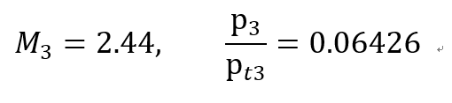
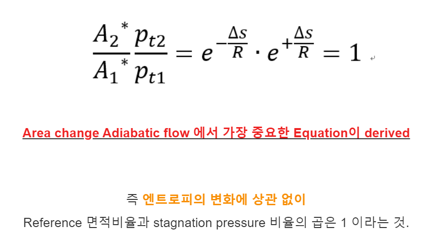
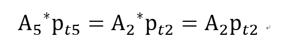
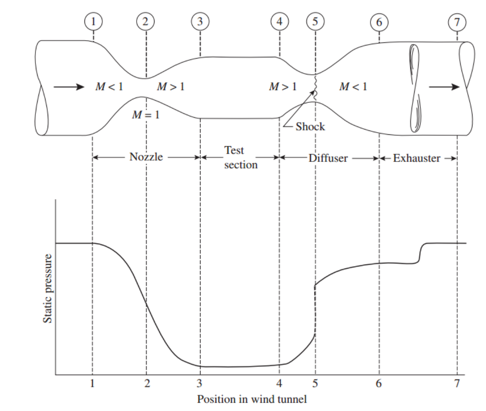

[Gas Dynamics] Ch 6 Varying - Standing Normal shock - part 2 문제풀이
[Last post short review]
Ch6 Part1 에서 저희는 normal shock의 정의
-Normal shock 이 생기는 이유
-Normal shock 의 Governing Equaton
-2nd Critical pressure
에 대해서 다뤘었습니다.
이제 실제 nozzle에서 Normal shock 이 생기는 경우를 문제를 통해서 살펴보도록 하죠
이전 Converging diverging nozzle 을 배울때 썼던 문제 그대로 ㄱㄱ
Assumptions
-Steady state process
-1-D analysis
- No heat transfer
-No Shaft work
-No friction
- Negligible potential
Given:
-Air flows in the nozzle
-P1 = Pt1 = 100psia
-A4=A3, A3/A2 = 2.494
Q1. Exit 에서 normal shock 발생, P rec??
![[Gas Dynamics] Ch 6 Varying - Standing Normal shock - part 2 문제풀이](./images/img-001.png)
먼저 A2 = A3 임을 알 수 있다.
(State 2 에서 Ma = 1이고, 2->3 Isentropic porcess이므로, reference * 정의)
![[Gas Dynamics] Ch 6 Varying - Standing Normal shock - part 2 문제풀이](./images/img-002.png)
State 3에서 A/A을 알기 때문에 Isentropic Table 을 통해서

1->2->3과정은 Isentropic 이므로, Pt1 = Pt2 = Pt3
![[Gas Dynamics] Ch 6 Varying - Standing Normal shock - part 2 문제풀이](./images/img-004.png)
다음 Normal shock table 을 통해서 inlet Ma3 = 2.44 인 경우
![[Gas Dynamics] Ch 6 Varying - Standing Normal shock - part 2 문제풀이](./images/img-005.png)
따라서 Normal shock 이 Exit 에 있는 경우 Receiver presure = 43.6psia 이고
우리는 이 pressure 을 2nd Critical pressure 이라고 부른다.
이번에는 Normal shock 이 Diverging nozzle 내부에서 일어나는 경우를 살펴보자.
Given:
-Air flows in the nozzle
-P1 = Pt1 = 100psia
-A4=A3, A3/A2 = 2.494
![[Gas Dynamics] Ch 6 Varying - Standing Normal shock - part 2 문제풀이](./images/img-006.png)
Q2. P rec = 60psia 인 경우 Normal shock 앞뒤 Ma3, Ma4 ??
Ch5 part2에서 Varying-Area flow에서 가장 중요한 식이라고 설명했던....
카드를 드디어 꺼내보자

이 식이 정말 유용한 이유는 Entropy가 변화하는 말든 상관이 없이 적용 된다는 것
마치 Stagnation Enthalpy 일정도 Entropy 변화와 무관하다는 것처럼 말이죠.
(물론 Steady state, 1-D, Adiabatic, No Shaft work, Neglect potential)
가정들은 함축되어 있습니다.
다시 문제로 돌아가서 보면
2,5번 state에서 위 식을 사용해주고, M2 = 1 이므로 A2* = A2

이제 양변을 A5와 P5로 나누어 주고, Pt2 = Pt1을 이용하면
![[Gas Dynamics] Ch 6 Varying - Standing Normal shock - part 2 문제풀이](./images/img-009.png)
이제 우항은 우리가 전부 아는 값들 이므로 대입해주면
![[Gas Dynamics] Ch 6 Varying - Standing Normal shock - part 2 문제풀이](./images/img-010.png)
이 값은 Isentropic Table에 명시되어 있고 따라서 M5 와 Pressure ratio 도출 가능.
![[Gas Dynamics] Ch 6 Varying - Standing Normal shock - part 2 문제풀이](./images/img-011.png)
마지막으로,,,,
1->2->3 (Isentropic proces) 이므로 Stagnation pressure 동일
4->5 (Isentropic proces) 이므로 Stagnation pressure 동일
![[Gas Dynamics] Ch 6 Varying - Standing Normal shock - part 2 문제풀이](./images/img-012.png)
결국 Shock 앞뒤 Stagnation pressure ratio를 알면 우리는
Normal shock Table 을 통해서
ans)
![[Gas Dynamics] Ch 6 Varying - Standing Normal shock - part 2 문제풀이](./images/img-013.png)
마지막으로 실제 supersonic 실험을 위한 wind tunnel 설계도

하나 재밌는 사실은 A2 x Pt2 = A5 x Pt5 이지만
Shock 이 5번에서 발생하므로 Pt2 > Pt5 임을 알 수 있다.
Therefore, 위 그림을 자세히 보면 A5 > A2 로 설계함을 알 수 있다.